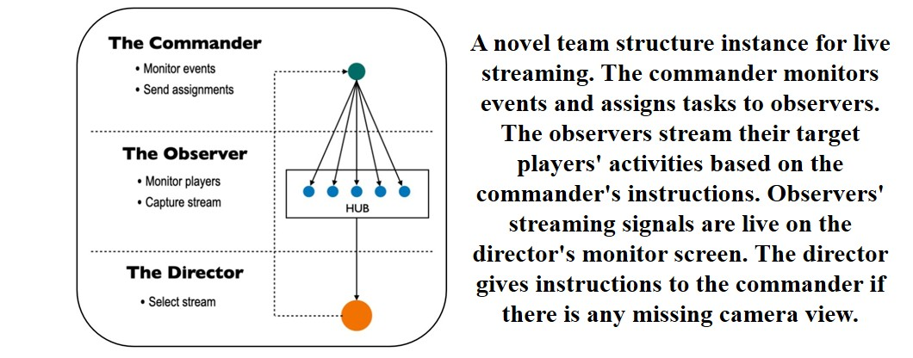
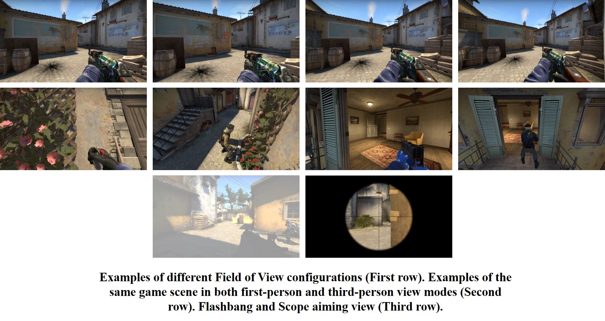

Research Projects

Expressive Soft Robots to encourage positive emotional experiences (On Going)
We are developing an expressive soft robot that introduces a novel “touch” modality. This project implements a novel soft robot technology to create a fluffy, pleasant-to-touch body that encourages natural and enjoyable interaction, while still achieving stable or even more elegant movement through greater freedom of motion. Based on this new touch sensation, we aim to investigate how robots can interpret and respond to various human emotions in order to promote positive emotional experiences. We are also integrating voice-based emotion recognition and LLMs to drive emotionally intelligent and adaptive interactions.

LLMs Powered Personalized Text and Image to 3D Human Body Model Pipeline
An integrated pipeline for personalized 3D human body generation based on text and image inputs,
including text-to-3D and image-to-3D model generation, as well as text-based model modification.
This pipeline is supported by a user-friendly web interface supports user interaction and provides detailed explanations of each step.

Integrating Generative AI for Enhanced Fitness Coaching
Exploration on ChatGPT's potential to understand body compositions and predict physical transformations,
providing users with insights into the outcomes of their fitness and nutrition efforts.
This research focuses on investigating the limitations and potential of the current ChatGPT in the sports domain to identify future challenges.

Understanding the Challenges of Team-Based Live Streaming for First-person Shooter Games
Investigation on how and why the live streaming team fails to capture highlight moments.
A field study was conducted on live-streamed competitions of Game For Peace, to summarize five typical mistakes and identify three primary reasons behind these issues.
Semi-structured interviews were conducted with two professional streaming teams to gather insights and propose system improvements to reduce the mistakes.

Simulator Sickness in First-person Shooter Game Esports Live Streaming
In this work, through surveys and interviews, four scenarios are identified that combine player actions and in-game environmental factors that likely to trigger Simulator Sickness.
Our findings also indicate some methods to reduce Simulator Sickness during games, such as a wide Field-of-View (FoV) setting and modifying the visual perspective from first-person to third-person view mode.
Publications
Li, J., Abouzahir, S., & El Saddik, A. (2025, May). Integrating Generative AI for Enhanced Fitness Coaching: From Exercise form to Posture and Body Composition Analysis.
In 2025 IEEE Medical Measurements & Applications (MeMeA) (pp. 1–5). IEEE.
Li, J., Li, M., Wen, Z. A., & Cai, W. (2022). Understanding the challenges of team-based live streaming for first-person shooter games.
In 2022 IEEE Games, Entertainment, Media Conference (GEM) (pp. 1–6). IEEE. Citation: 1
Duan, H., Li, J., Fan, S., Lin, Z., Wu, X., & Cai, W. (2021). Metaverse for social good: A university campus prototype.
In Proceedings of the 29th ACM International Conference on Multimedia (pp. 153–161). Citation: 1127
Lin, Z., Duan, H., Li, J., Sun, X., & Cai, W. (2023). MetaCast: A Self-Driven Metaverse Announcer Architecture Based on Quality of Experience Evaluation Model.
In Proceedings of the 31st ACM International Conference on Multimedia (pp. 6756–6764). Citation: 3